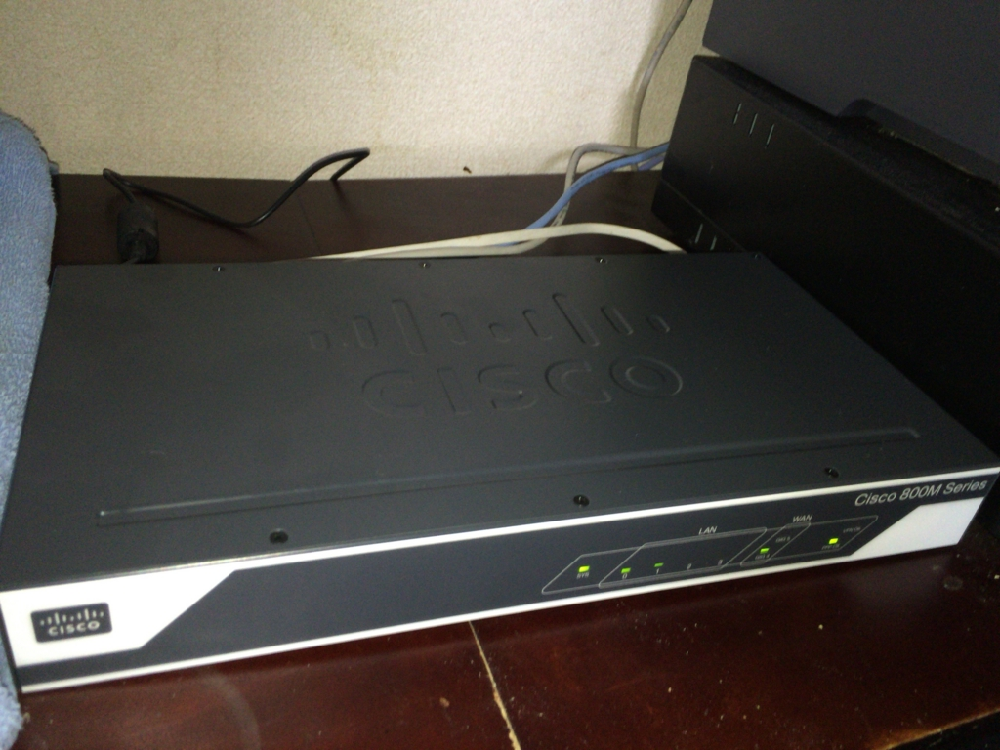
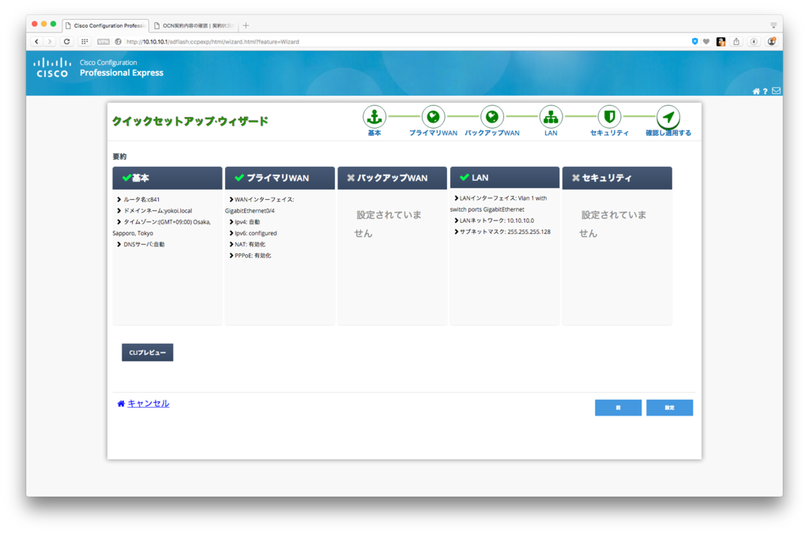
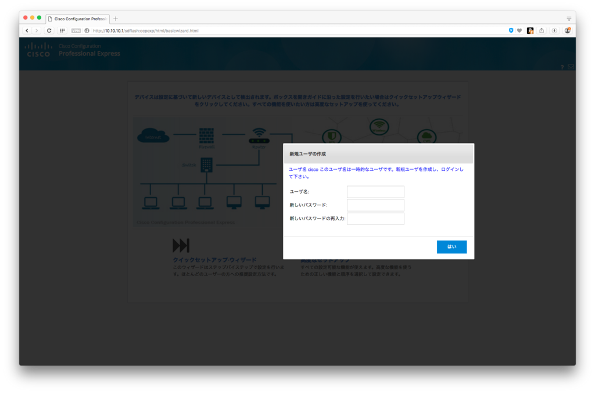
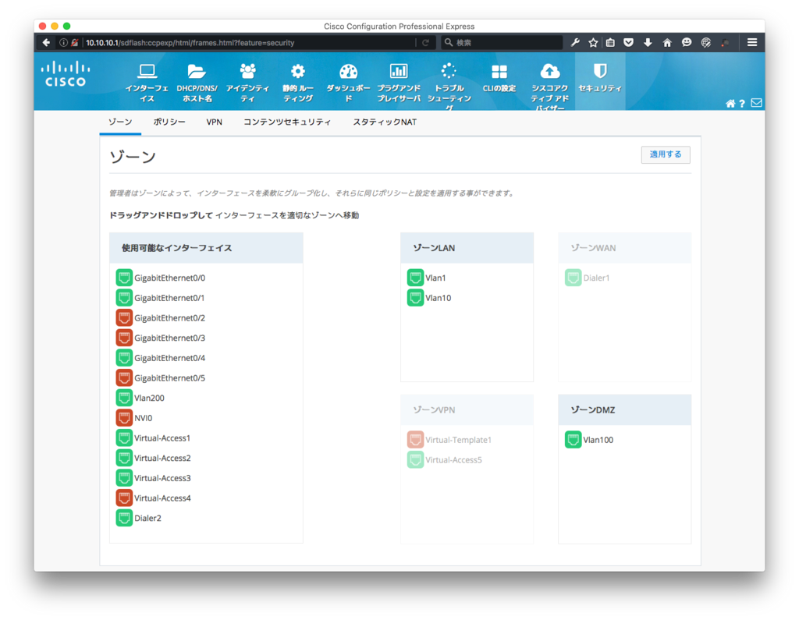

届いた。


C841M-4X-JSEC/K9を買いました。 アマゾンで２万円くらい、定価でも4万円しないのでとても安いです。
一般的なブロードバンドルータと比較するとさすがに高いですが、Cisco製品が新品でという意味なら安いと思います。
設定について
初期設定では、LAN側のポートにケーブルを挿すだけで、10.10.10.0/24のアドレスが割り振られ、管理画面にアクセスできるようになっています。

最初にアクセスすると、クイックセットアップウィザードが表示され、 ログイン直後にユーザ名、パスワードを変更するようになっています。

PPPoEやらファイヤウォールの設定はクイックセットアップウィザードで出来るので、あまり凝った設定をしないのであれば、買ってすぐに使えると思われます。
困ったこと
GUIからtrunkポートの設定ができない CLIで変更したらtrunkも候補に出てきますが、最初から選ぶことができません。
ゾーンを追加しても、選択できない
下の画像には表示されていませんが、Vlan200についてはWLANというゾーンに入っています。

ファイヤウォールのポリシー設定についても、追加したゾーンは表示されません。
CLIで設定した場合は表示されるし設定も出来ますが、新規追加時は標準のゾーン以外選択できません。
基本的に、用意されたパターン以外の設定についてはCLIを使うしかないようです。
気が向いたら、実際にやってみたことなんかを書いて行こうと思います。
最近ツールを導入できない環境での試験が多いのでメモ書き程度に。
実行すると、カレントディレクトリの server.list に書かれたホストへPINGを打って、hoge.csvへ記録していきます。
実行結果はこんな感じになります。
Time Address ReplySize ResponseTime ResponseTimeToLive StatusCode
---- ------- --------- ------------ ------------------ ----------
2016/02/11 18:51:58 192.168.100.1 32 0 64 0
2016/02/11 18:51:58 8.8.8.8 32 6 51 0
2016/02/11 18:51:58 192.168.200.2 11003
Time Address ReplySize ResponseTime ResponseTimeToLive StatusCode
---- ------- --------- ------------ ------------------ ----------
2016/02/11 18:52:01 192.168.100.1 32 0 64 0
2016/02/11 18:52:01 8.8.8.8 32 6 51 0
2016/02/11 18:52:01 192.168.200.2 11003
正常に疎通をしない場合はStatusCodeが0以外を返すはずなので、こんな感じで検索できます。
> Import-Csv hoge.csv | Where-Object { $_.StatusCode -ne 0 } | Format-Table -AutoSize
Time Address ReplySize ResponseTime ResponseTimeToLive StatusCode
---- ------- --------- ------------ ------------------ ----------
2016/02/11 18:51:46 192.168.200.2 11003
2016/02/11 18:51:49 192.168.200.2 11003
2016/02/11 18:51:52 192.168.200.2 11003
2016/02/11 18:51:55 192.168.200.2 11003
2016/02/11 18:51:58 192.168.200.2 11003
2016/02/11 18:52:01 192.168.200.2 11003